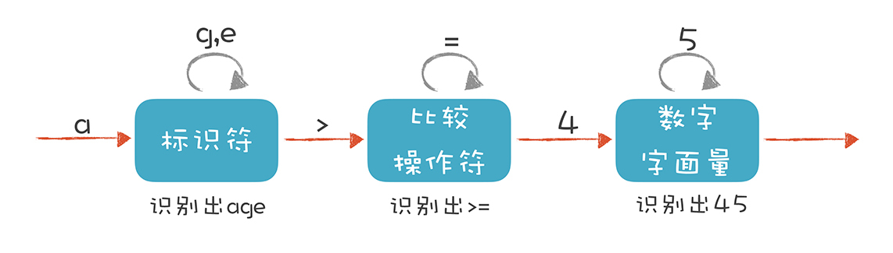
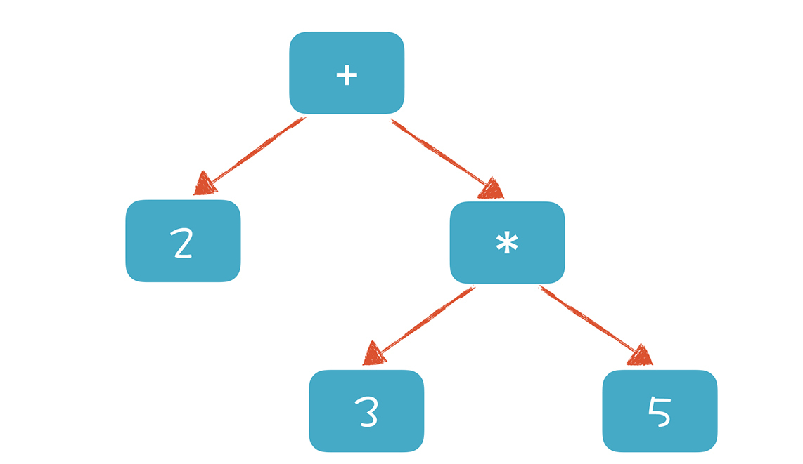
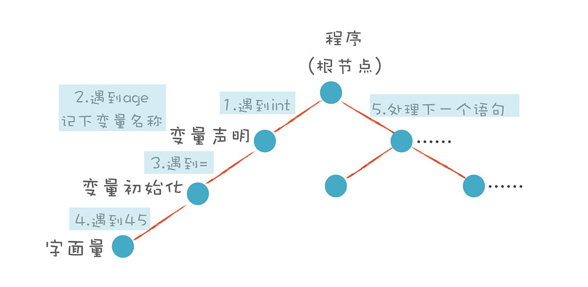

- 00 开篇词 为什么你要学习编译原理？.md.html
- 01 理解代码：编译器的前端技术.md.html
- 02 正则文法和有限自动机：纯手工打造词法分析器.md.html
- 03 语法分析（一）：纯手工打造公式计算器.md.html
- 04 语法分析（二）：解决二元表达式中的难点.md.html
- 05 语法分析（三）：实现一门简单的脚本语言.md.html
- 06 编译器前端工具（一）：用Antlr生成词法、语法分析器.md.html
- 07 编译器前端工具（二）：用Antlr重构脚本语言.md.html
- 08 作用域和生存期：实现块作用域和函数.md.html
- 09 面向对象：实现数据和方法的封装.md.html
- 10 闭包： 理解了原理，它就不反直觉了.md.html
- 11 语义分析（上）：如何建立一个完善的类型系统？.md.html
- 12 语义分析（下）：如何做上下文相关情况的处理？.md.html
- 13 继承和多态：面向对象运行期的动态特性.md.html
- 14 前端技术应用（一）：如何透明地支持数据库分库分表？.md.html
- 15 前端技术应用（二）：如何设计一个报表工具？.md.html
- 16 NFA和DFA：如何自己实现一个正则表达式工具？.md.html
- 17 First和Follow集合：用LL算法推演一个实例.md.html
- 18 移进和规约：用LR算法推演一个实例.md.html
- 19 案例总结与热点问题答疑：对于左递归的语法，为什么我的推导不是左递归的？.md.html
- 20 高效运行：编译器的后端技术.md.html
- 21 运行时机制：突破现象看本质，透过语法看运行时.md.html
- 22 生成汇编代码（一）：汇编语言其实不难学.md.html
- 23 生成汇编代码（二）：把脚本编译成可执行文件.md.html
- 24 中间代码：兼容不同的语言和硬件.md.html
- 25 后端技术的重用：LLVM不仅仅让你高效.md.html
- 26 生成IR：实现静态编译的语言.md.html
- 27 代码优化：为什么你的代码比他的更高效？.md.html
- 28 数据流分析：你写的程序，它更懂.md.html
- 29 目标代码的生成和优化（一）：如何适应各种硬件架构？.md.html
- 30 目标代码的生成和优化（二）：如何适应各种硬件架构？.md.html
- 31 内存计算：对海量数据做计算，到底可以有多快？.md.html
- 32 字节码生成：为什么Spring技术很强大？.md.html
- 33 垃圾收集：能否不停下整个世界？.md.html
- 34 运行时优化：即时编译的原理和作用.md.html
- 35 案例总结与热点问题答疑：后端部分真的比前端部分难吗？.md.html
- 36 当前技术的发展趋势以及其对编译技术的影响.md.html
- 37 云编程：云计算会如何改变编程模式？.md.html
- 38 元编程：一边写程序，一边写语言.md.html
- 加餐 汇编代码编程与栈帧管理.md.html
- 用户故事 因为热爱，所以坚持.md.html
- 第二季回归 这次，我们一起实战解析真实世界的编译器.md.html
- 结束语 用程序语言，推动这个世界的演化.md.html
- 捐赠
01 理解代码：编译器的前端技术
在开篇词里，我分享了一些使用编译技术的场景。其中有的场景，你只要掌握编译器的前端技术就能解决。比如文本分析场景，软件需要用户自定义功能的场景以及前端编程语言的翻译场景等。而且咱们大学讲的编译原理，也是侧重讲解前端技术，可见编译器的前端技术有多么重要。
当然了，这里的“前端（Front End）”指的是编译器对程序代码的分析和理解过程。它通常只跟语言的语法有关，跟目标机器无关。而与之对应的“后端（Back End）”则是生成目标代码的过程，跟目标机器有关。为了方便你理解，我用一张图直观地展现了编译器的整个编译过程。

你可以看到，编译器的“前端”技术分为词法分析、语法分析和语义分析三个部分。而它主要涉及自动机和形式语言方面的基础的计算理论。
这些抽象的理论也许会让你“撞墙”，不过不用担心，我今天会把难懂的理论放到一边，用你听得懂的大白话，联系实际使用的场景，带你直观地理解它们，让你学完本节课之后，实现以下目标：
- 对编译过程以及其中的技术点有个宏观、概要的了解。
- 能够在大脑里绘制一张清晰的知识地图，以应对工作需要。比如分析一个日志文件时，你能知道所对应的技术点，从而针对性地解决问题。
好了，接下来让我们正式进入今天的课程吧！
词法分析（Lexical Analysis）
通常，编译器的第一项工作叫做词法分析。就像阅读文章一样，文章是由一个个的中文单词组成的。程序处理也一样，只不过这里不叫单词，而是叫做“词法记号”，英文叫Token。我嫌“词法记号”这个词太长，后面直接将它称作Token吧。
举个例子，看看下面这段代码，如果我们要读懂它，首先要怎么做呢？
#include <stdio.h>
int main(int argc, char* argv[]){
int age = 45;
if (age >= 17+8+20) {
printf("Hello old man!\\n");
}
else{
printf("Hello young man!\\n");
}
return 0;
}
我们会识别出if、else、int这样的关键字，main、printf、age这样的标识符，+、-、=这样的操作符号，还有花括号、圆括号、分号这样的符号，以及数字字面量、字符串字面量等。这些都是Token。
那么，如何写一个程序来识别Token呢？可以看到，英文内容中通常用空格和标点把单词分开，方便读者阅读和理解。但在计算机程序中，仅仅用空格和标点分割是不行的。比如“age >= 45”应该分成“age”“>=”和“45”这三个Token，但在代码里它们可以是连在一起的，中间不用非得有空格。
这和汉语有点儿像，汉语里每个词之间也是没有空格的。但我们会下意识地把句子里的词语正确地拆解出来。比如把“我学习编程”这个句子拆解成“我”“学习”“编程”，这个过程叫做“分词”。如果你要研发一款支持中文的全文检索引擎，需要有分词的功能。
其实，我们可以通过制定一些规则来区分每个不同的Token，我举了几个例子，你可以看一下。
识别age这样的标识符。它以字母开头，后面可以是字母或数字，直到遇到第一个既不是字母又不是数字的字符时结束。
识别>=这样的操作符。 当扫描到一个>字符的时候，就要注意，它可能是一个GT（Greater Than，大于）操作符。但由于GE（Greater Equal，大于等于）也是以>开头的，所以再往下再看一位，如果是=，那么这个Token就是GE，否则就是GT。
识别45这样的数字字面量。当扫描到一个数字字符的时候，就开始把它看做数字，直到遇到非数字的字符。
这些规则可以通过手写程序来实现。事实上，很多编译器的词法分析器都是手写实现的，例如GNU的C语言编译器。
如果嫌手写麻烦，或者你想花更多时间陪恋人或家人，也可以偷点儿懒，用词法分析器的生成工具来生成，比如Lex（或其GNU版本，Flex）。这些生成工具是基于一些规则来工作的，这些规则用“正则文法”表达，符合正则文法的表达式称为“正则表达式”。生成工具可以读入正则表达式，生成一种叫“有限自动机”的算法，来完成具体的词法分析工作。
不要被“正则文法（Regular Grammar）”和“有限自动机（Finite-state Automaton，FSA，or Finite Automaton）”吓到。正则文法是一种最普通、最常见的规则，写正则表达式的时候用的就是正则文法。我们前面描述的几个规则，都可以看成口语化的正则文法。
有限自动机是有限个状态的自动机器。我们可以拿抽水马桶举例，它分为两个状态：“注水”和“水满”。摁下冲马桶的按钮，它转到“注水”的状态，而浮球上升到一定高度，就会把注水阀门关闭，它转到“水满”状态。
词法分析器也是一样，它分析整个程序的字符串，当遇到不同的字符时，会驱使它迁移到不同的状态。例如，词法分析程序在扫描age的时候，处于“标识符”状态，等它遇到一个>符号，就切换到“比较操作符”的状态。词法分析过程，就是这样一个个状态迁移的过程。

你也许熟悉正则表达式，因为我们在编程过程中经常用正则表达式来做用户输入的校验，例如是否输入了一个正确的电子邮件地址，这其实就是在做词法分析，你应该用过。
语法分析 （Syntactic Analysis, or Parsing）
编译器下一个阶段的工作是语法分析。词法分析是识别一个个的单词，而语法分析就是在词法分析的基础上识别出程序的语法结构。这个结构是一个树状结构，是计算机容易理解和执行的。
以自然语言为例。自然语言有定义良好的语法结构，比如，“我喜欢又聪明又勇敢的你”这个句子包含了“主、谓、宾”三个部分。主语是“我”，谓语是“喜欢”，宾语部分是“又聪明又勇敢的你”。其中宾语部分又可以拆成两部分，“又聪明又勇敢”是定语部分，用来修饰“你”。定语部分又可以分成“聪明”和“勇敢”两个最小的单位。
这样拆下来，会构造一棵树，里面的每个子树都有一定的结构，而这个结构要符合语法。比如，汉语是用“主谓宾”的结构，日语是用“主宾谓”的结构。这时，我们说汉语和日语的语法规则是不同的。

程序也有定义良好的语法结构，它的语法分析过程，就是构造这么一棵树。一个程序就是一棵树，这棵树叫做抽象语法树（Abstract Syntax Tree，AST）。树的每个节点（子树）是一个语法单元，这个单元的构成规则就叫“语法”。每个节点还可以有下级节点。
层层嵌套的树状结构，是我们对计算机程序的直观理解。计算机语言总是一个结构套着另一个结构，大的程序套着子程序，子程序又可以包含子程序。
接下来，我们直观地看一下这棵树长什么样子。 我在Mac电脑上打下这个命令：
clang -cc1 -ast-dump hello.c
这个命令是运行苹果公司的C语言编译器来编译hello.c，-ast-dump参数使它输出AST，而不是做常规的编译。我截取了一部分输出结果给你看，从中你可以看到这棵树的结构。 试着修改程序，添加不同的语句，你会看到不同的语法树。

如果你觉得这棵树还不够直观，可以参考我提供的网址，它能够生成JavaScript语言的AST，并以更加直观的方式呈现。
在这个网址里输入一个可以计算的表达式，例如“2+3*5”，你会得到一棵类似下图的AST。

形成AST以后有什么好处呢？就是计算机很容易去处理。比如，针对表达式形成的这棵树，从根节点遍历整棵树就可以获得表达式的值。基于这个原理，我在后面的课程中会带你实现一个计算器，并实现自定义公式功能。
如果再把循环语句、判断语句、赋值语句等节点加到AST上，并解释执行它，那么你实际上就实现了一个脚本语言。而执行脚本语言的过程，就是遍历AST的过程。当然，在后面的课程中，我也会带你实际实现一个脚本语言。
好了，你已经知道了AST的作用，那么怎样写程序构造它呢？
一种非常直观的构造思路是自上而下进行分析。首先构造根节点，代表整个程序，之后向下扫描Token串，构建它的子节点。当它看到一个int类型的Token时，知道这儿遇到了一个变量声明语句，于是建立一个“变量声明”节点；接着遇到age，建立一个子节点，这是第一个变量；之后遇到=，意味着这个变量有初始化值，那么建立一个初始化的子节点；最后，遇到“字面量”，其值是45。
这样，一棵子树就扫描完毕了。程序退回到根节点，开始构建根节点的第二个子节点。这样递归地扫描，直到构建起一棵完整的树。

这个算法就是非常常用的递归下降算法（Recursive Descent Parsing）。是不是很简单？你完全可以动手写出来。
递归下降算法是一种自顶向下的算法，与之对应的，还有自底向上的算法。这个算法会先将最下面的叶子节点识别出来，然后再组装上一级节点。有点儿像搭积木，我们总是先构造出小的单元，然后再组装成更大的单元。原理就是这么简单。
也许你会想，除了手写，有没有偷懒的、更省事的方法呢？多一些时间去陪家人总不是坏事。
你现在已经有了一定的经验，大可以去找找看有没有现成的工具，比如Yacc（或GNU的版本，Bison）、Antlr、JavaCC等。实际上，你可以在维基百科里找到一个挺大的清单，我把它放到了CSDN的博客上，其中对各种工具的特性做了比较。
顺理成章地，你还能找到很多开源的语法规则文件，改一改，就能用工具生成你的语法分析器。
很多同学其实已经做过语法解析的工作，比如编写一个自定义公式的功能，对公式的解析就是语法分析过程。另一个例子是分析日志文件等文本文件，对每行日志的解析，本质上也是语法分析过程。解析用XML、JSON写的各种配置文件、模型定义文件的过程，其实本质也是语法分析过程，甚至还包含了语义分析工作。
语义分析（Semantic Analysis）
好了，讲完了词法分析、语法分析，编译器接下来做的工作是语义分析。说白了，语义分析就是要让计算机理解我们的真实意图，把一些模棱两可的地方消除掉。
以“You can never drink too much water.” 这句话为例。它的确切含义是什么？是“你不能喝太多水”，还是“你喝多少水都不嫌多”？实际上，这两种解释都是可以的，我们只有联系上下文才能知道它的准确含义。
你可能会觉得理解自然语言的含义已经很难了，所以计算机语言的语义分析也一定很难。其实语义分析没那么复杂，因为计算机语言的语义一般可以表达为一些规则，你只要检查是否符合这些规则就行了。比如：
某个表达式的计算结果是什么数据类型？如果有数据类型不匹配的情况，是否要做自动转换？
如果在一个代码块的内部和外部有相同名称的变量，我在执行的时候到底用哪个？ 就像“我喜欢又聪明又勇敢的你”中的“你”，到底指的是谁，需要明确。
在同一个作用域内，不允许有两个名称相同的变量，这是唯一性检查。你不能刚声明一个变量a，紧接着又声明同样名称的一个变量a，这就不允许了。
语义分析基本上就是做这样的事情，也就是根据语义规则进行分析判断。
语义分析工作的某些成果，会作为属性标注在抽象语法树上，比如在age这个标识符节点和45这个字面量节点上，都会标识它的数据类型是int型的。
在这个树上还可以标记很多属性，有些属性是在之前的两个阶段就被标注上了，比如所处的源代码行号，这一行的第几个字符。这样，在编译程序报错的时候，就可以比较清楚地了解出错的位置。
做了这些属性标注以后，编译器在后面就可以依据这些信息生成目标代码了，我们在编译技术的后端部分会去讲。
课程小结
讲完语义分析，本节课也就告一段落了，我来总结一下本节课的重点内容：
词法分析是把程序分割成一个个Token的过程，可以通过构造有限自动机来实现。
语法分析是把程序的结构识别出来，并形成一棵便于由计算机处理的抽象语法树。可以用递归下降的算法来实现。
语义分析是消除语义模糊，生成一些属性信息，让计算机能够依据这些信息生成目标代码。
我想让你知道，上述编译过程其实跟你的实际工作息息相关。比如，词法分析就是你工作中使用正则表达式的过程。而语法分析在你解析文本文件、配置文件、模型定义文件，或者做自定义公式功能的时候都会用到。
我还想让你知道，编译技术并没有那么难，它的核心原理是很容易理解的。学习之后，你能很快上手，如果善用一些辅助生成工具会更省事。所以，我希望你通过学习这篇文章，已经破除了一些心理障碍，并跃跃欲试，想要动手做点儿什么了！
一课一思
你有没有觉得，刚开始学编译原理中的某些知识点时特别难，一旦学通了以后，就会发出类似的感慨：“啊！原来就是这么回事！”欢迎在留言区与我分享你的感慨时刻。另外，你是否尝试实现过一个编译器，还颇有一些心得？可以在留言区与大家一起交流。
最后，感谢你的阅读，如果这篇文章让你有所收获，也欢迎你将它分享给更多的朋友。
© 2019 - 2023 Liangliang Lee. Powered by gin and hexo-theme-book.